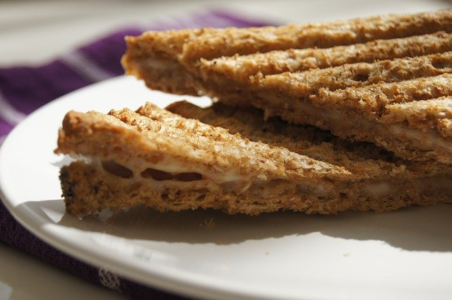

Simple Grilled Cheese

After a long day, when you need something quick, simple, and tasty.
Ingredients
- Sourdough bread, 2 slices
- Cheese of your choice; sliced chedder works best
- Butter
- (optional) garlic powder
Directions
- Spread butter on one side of each slice of bread.
Sprinkle garlic powder (optional) on the buttered side.
- With buttered side down place 1-2 slices of cheese on "un-buttered" side.
- Spray olive oil in skillet pan over medium heat.
- Place both slices of bread in skillet pan, buttered side down.
- Cook until cheese is starting to melt, and bread is golden.
- Flip one piece of bread on top of the other, and continue
cooking until the cheese on both slices are melted together.
- Take out of skillet pan, and let cool.
- Enjoy!
Homepage